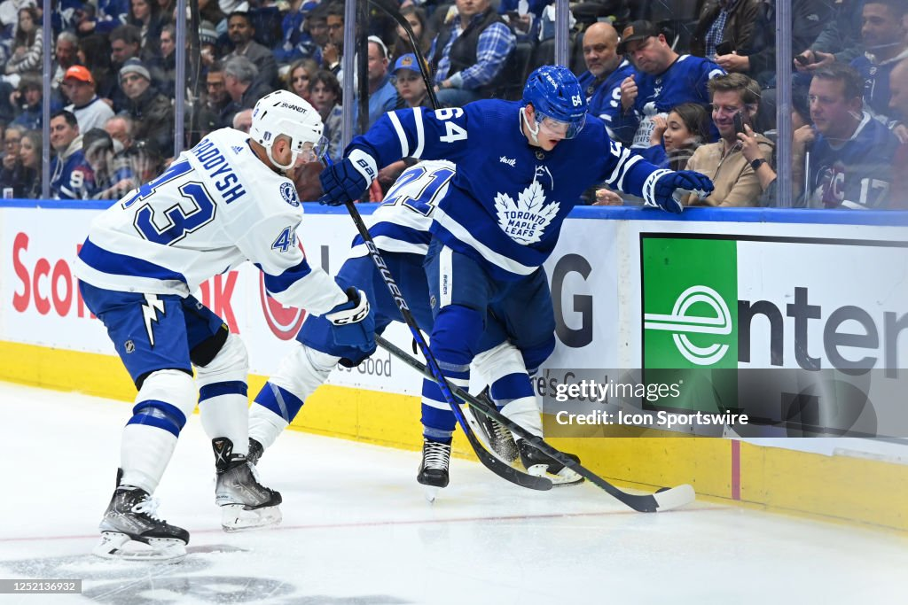
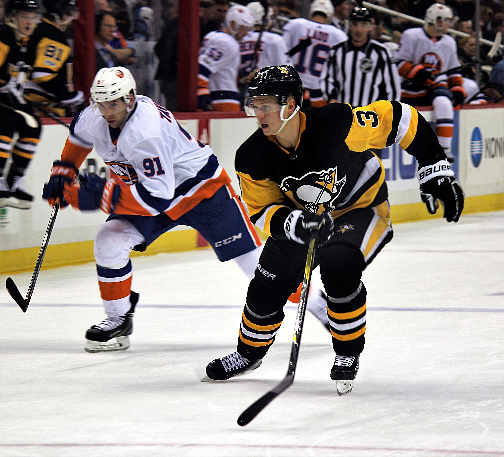
Uppdraget
Ni är hockeydetektiver! 🕵️
Mysteriet: "Hur blir man bättre på ishockey - utan skridskor?"
Detektivmetoden
- 1 Titta noga på situationerna
- 2 Diskutera i grupp - kroppsdelar & egenskaper
- 3 Föreslå en övning som skulle hjälpa
- 4 Vi går igenom allihopa tillsammans
- 5 Höra tränarens förslag på övningar
1 · Skydda pucken i hörnet

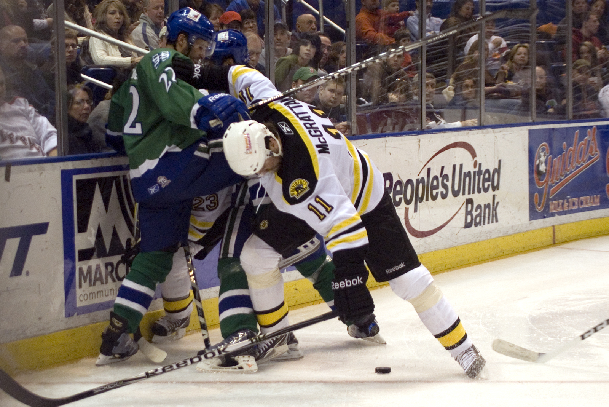
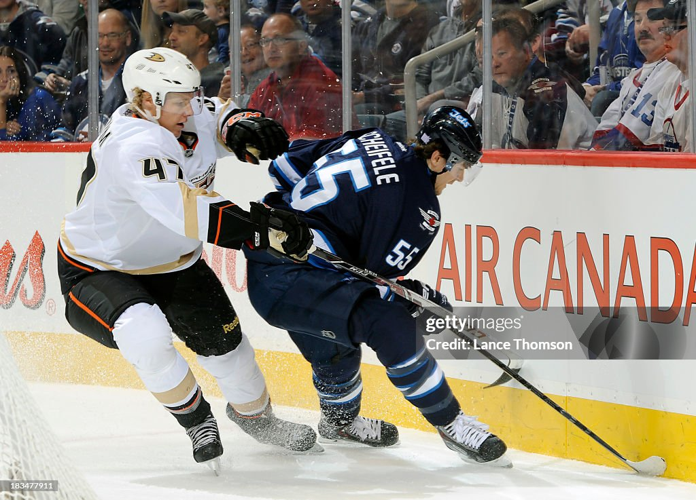
2 · Första tre skären mot en lös puck
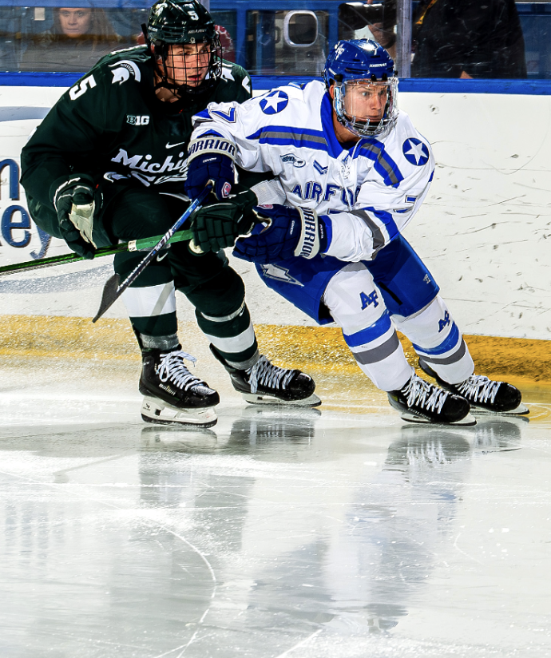
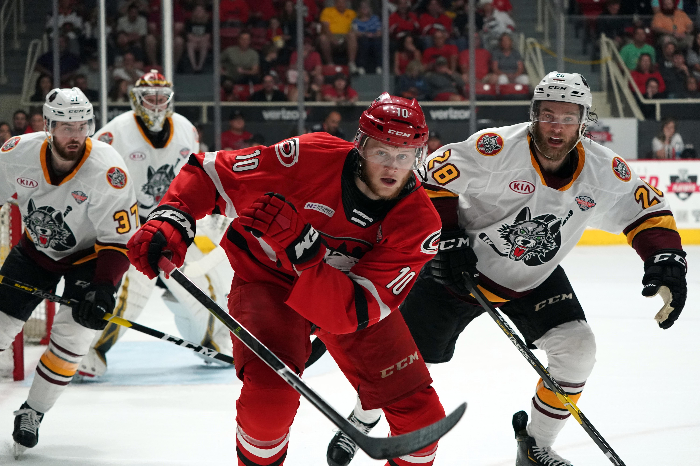
3 · Orka spela i låg hockeyposition
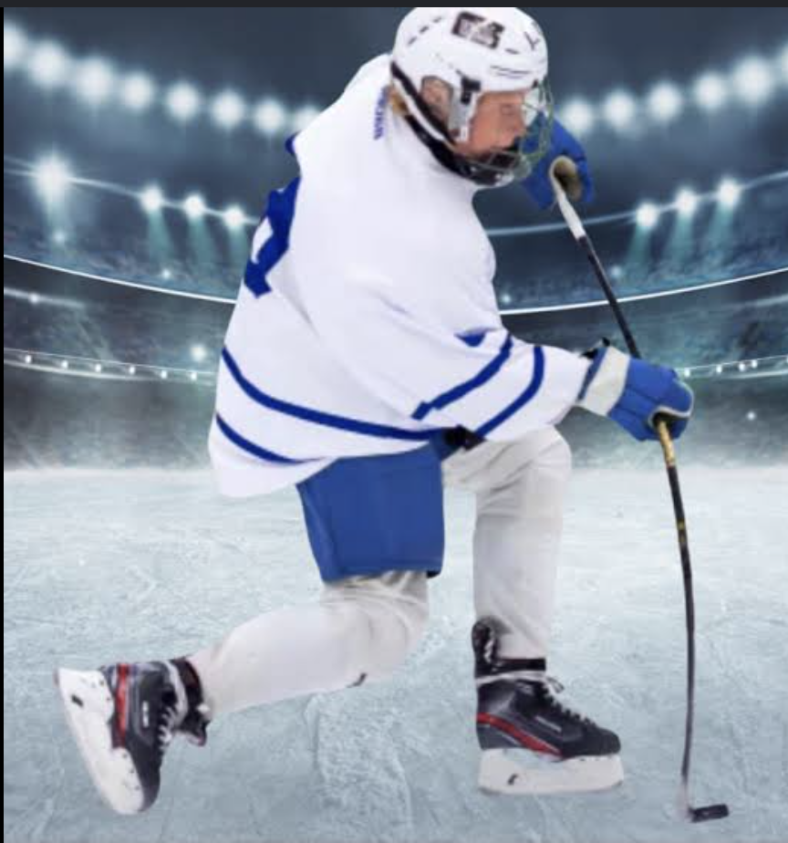
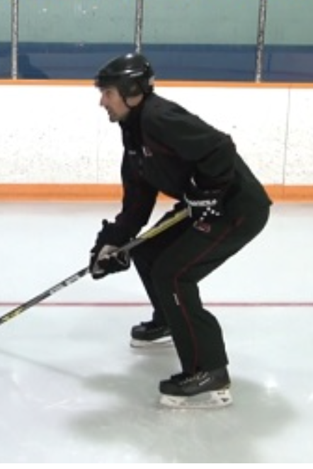
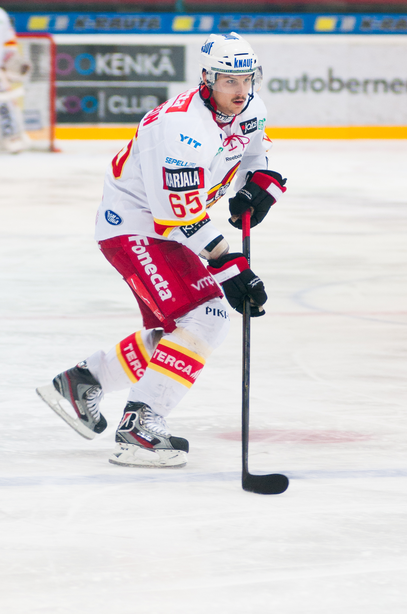
4 · Hårdare handledsskott
5 · Komma upp snabbt efter ett fall
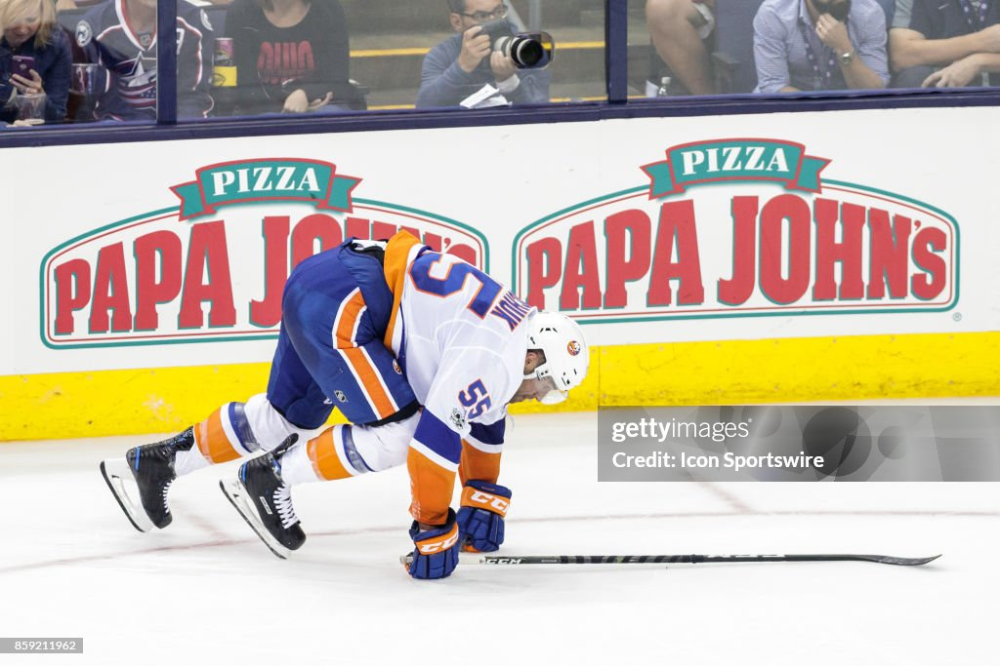
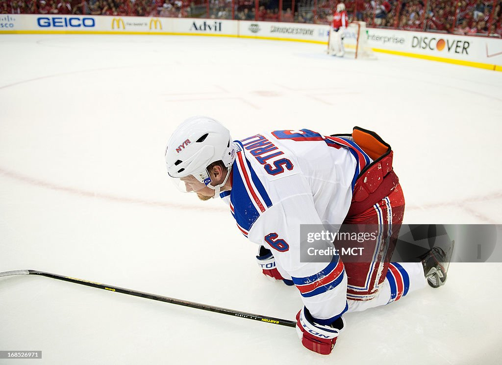
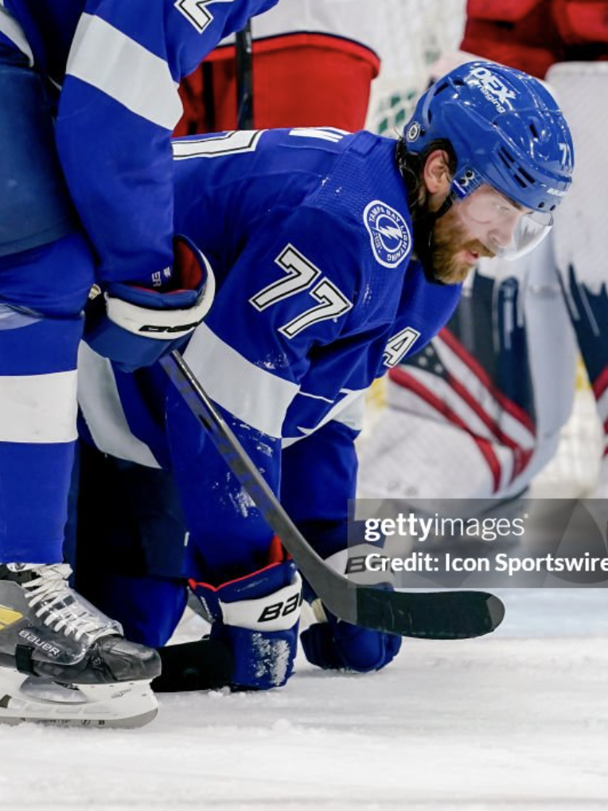
6 · Sidledsförflyttning när man dribblar
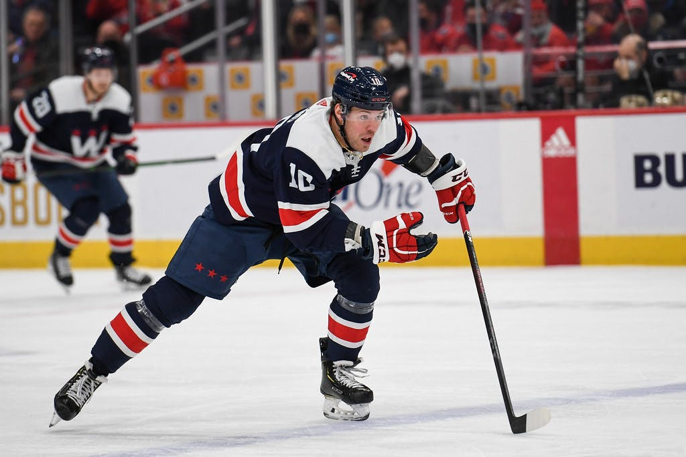
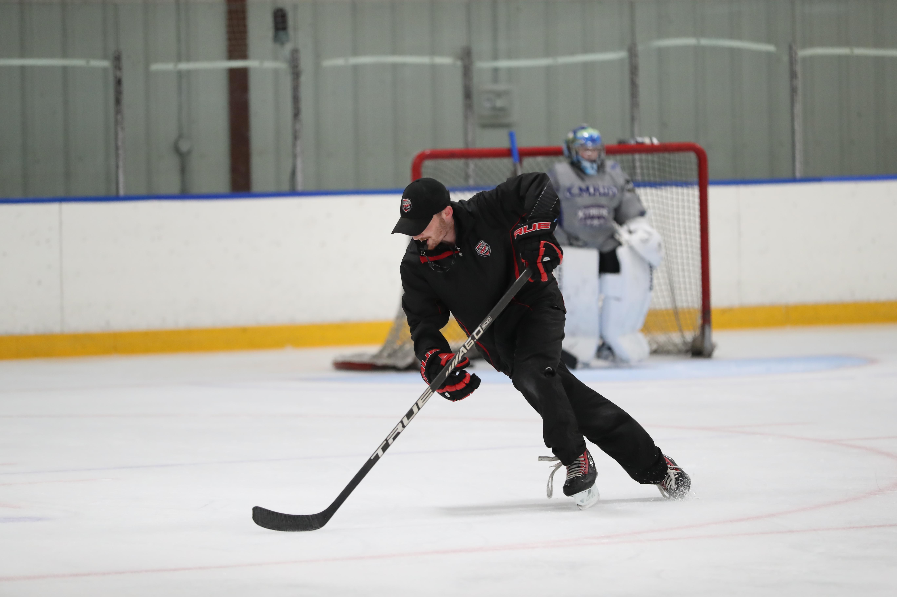
Fem saker vi tränar på
⚡Snabbhet
🤸Rörlighet
😤Uthållighet
Nu jobbar vi i grupper!
- 1 Ta era kort - en situation per grupp
- 2 Vilka kroppsdelar är viktiga där?
- 3 Vilka av de fem egenskaperna hjälper mest?
- 4 Föreslå en övning - skriv på baksidan!
1 · Skydda pucken i hörnet
2 · Första tre skären mot en lös puck
3 · Orka spela i låg hockeyposition
4 · Hårdare handledsskott
5 · Komma upp snabbt efter ett fall
6 · Sidledsförflyttning när man dribblar
Vi växer olika fort
Fast ni är lika gamla.
Hur påverkar det spelet nu?
Så växer musklerna 😴💪
- 1 Du tränar - musklerna jobbar hårt och blir lite trötta och slitna
- 2 Kroppen lagar musklerna medan du vilar
- 3 Allra mest lagning sker när du sover djupt - då blir musklerna starkare än innan!
Sömn är lika viktigt som träningen! 🌙